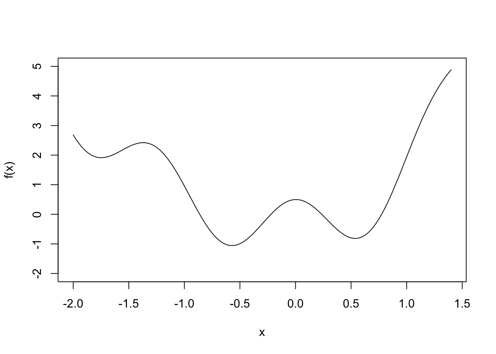

Last updated: 2021-12-01
Checks: 7 0
Knit directory: STAT5014_Fall2021_website/
This reproducible R Markdown analysis was created with workflowr (version 1.6.2). The Checks tab describes the reproducibility checks that were applied when the results were created. The Past versions tab lists the development history.
Great! Since the R Markdown file has been committed to the Git repository, you know the exact version of the code that produced these results.
Great job! The global environment was empty. Objects defined in the global environment can affect the analysis in your R Markdown file in unknown ways. For reproduciblity it’s best to always run the code in an empty environment.
The command set.seed(20210816) was run prior to running the code in the R Markdown file. Setting a seed ensures that any results that rely on randomness, e.g. subsampling or permutations, are reproducible.
Great job! Recording the operating system, R version, and package versions is critical for reproducibility.
Nice! There were no cached chunks for this analysis, so you can be confident that you successfully produced the results during this run.
Great job! Using relative paths to the files within your workflowr project makes it easier to run your code on other machines.
Great! You are using Git for version control. Tracking code development and connecting the code version to the results is critical for reproducibility.
The results in this page were generated with repository version 92c5e53. See the Past versions tab to see a history of the changes made to the R Markdown and HTML files.
Note that you need to be careful to ensure that all relevant files for the analysis have been committed to Git prior to generating the results (you can use wflow_publish or wflow_git_commit). workflowr only checks the R Markdown file, but you know if there are other scripts or data files that it depends on. Below is the status of the Git repository when the results were generated:
Ignored files:
Ignored: .DS_Store
Ignored: .Rhistory
Ignored: .Rproj.user/
Ignored: analysis/Week_6_R_functions_logic_good_programming_practices_cache/
Untracked files:
Untracked: sensory_raw.RDS
Note that any generated files, e.g. HTML, png, CSS, etc., are not included in this status report because it is ok for generated content to have uncommitted changes.
These are the previous versions of the repository in which changes were made to the R Markdown (analysis/Week_9_homework_5.Rmd) and HTML (docs/Week_9_homework_5.html) files. If you’ve configured a remote Git repository (see ?wflow_git_remote), click on the hyperlinks in the table below to view the files as they were in that past version.
| File | Version | Author | Date | Message |
|---|---|---|---|---|
| html | 7b688c4 | rsettlag | 2021-12-01 | Build site. |
| html | 1e08713 | rsettlag | 2021-12-01 | Build site. |
| html | 0523008 | rsettlag | 2021-12-01 | Build site. |
| html | 2c835ac | rsettlag | 2021-11-13 | Build site. |
| html | ecb37d4 | rsettlag | 2021-11-13 | Build site. |
| html | 8483134 | rsettlag | 2021-11-13 | Build site. |
| html | ad822b8 | rsettlag | 2021-11-13 | Build site. |
| html | 6be6c65 | rsettlag | 2021-11-10 | Build site. |
| Rmd | b9f2192 | rsettlag | 2021-11-06 | homework 9 refinement |
| html | b9f2192 | rsettlag | 2021-11-06 | homework 9 refinement |
| html | ba5a308 | rsettlag | 2021-11-06 | Build site. |
| Rmd | 5bc1dd2 | rsettlag | 2021-11-06 | fixing up Week 9 |
| html | 5bc1dd2 | rsettlag | 2021-11-06 | fixing up Week 9 |
For each assignment, turn in by the due date/time. Late assignments must be arranged prior to submission. In every case, assignments are to be typed neatly using proper English in Markdown.
The last couple of weeks, we spoke about the apply family of functions and convenience tools for parallelizing your code. It turns out going parallel is tricky the first time as you get past platform specific oddities of your local computer, but I would highly recommend you spend a little time in one of the following problems seeing if you can do it.
Create a new R Markdown file within your local GitHub repo folder (file–>new–>R Markdown–>save as).
The filename should be: HW5_pid.rmd, i.e. for me it would be HW5_rsettlage.rmd .
You will use this new R Markdown file to solve the following problems.
Bootstrapping
Recall the sensory data from five operators:
http://www2.isye.gatech.edu/~jeffwu/wuhamadabook/data/Sensory.dat
Sometimes, you really want more data to do the desired analysis, but going back to the “field” is often not an option. An often used method is bootstrapping. Check out the second answer here for a really nice and detailed description of bootstrapping: https://stats.stackexchange.com/questions/316483/manually-bootstrapping-linear-regression-in-r.
What we want to do is bootstrap the Sensory data to get non-parametric estimates of the parameters. Assume that we can neglect item in the analysis such that we are really only interested in a linear model lm(y~operator).
First, the question asked in the stackexchange was why is the supplied code not working. This question was actually never answered. What is the problem with the code? If you want to duplicate the code to test it, use the quantreg package to get the data.
Bootstrap the analysis to get the parameter estimates using 100 bootstrapped samples. Make sure to use system.time to get total time for the analysis. You should probably make sure the samples are balanced across operators, ie each sample draws for each operator.
Redo the last problem but run the bootstraps in parallel (cl <- makeCluster(4)), don’t forget to stopCluster(cl)). Why can you do this? Make sure to use system.time to get total time for the analysis. Note, the 4 in makeCluster should be less than the total cores/threads available in your system. You can do this on the Rstudio.cloud or ARC resources.
Create a single table summarizing the results and timing from part a and b. What are your thoughts?
Newton’s method gives an answer for a root. To find multiple roots, you need to try different starting values. There is no guarantee for what start will give a specific root, so you simply need to try multiple.
Given the following function, let’s find the roots \[\begin{equation} f(x) = 3^x - sin(x) + cos(5*x) + x^2 - 1.5 \end{equation}\]
Shown in the figure below.

| Version | Author | Date |
|---|---|---|
| 5bc1dd2 | rsettlag | 2021-11-06 |
From the plot of the function, how many roots are there?
Create a function that takes as input a starting point for Newtons method and returns a root. Use a tolerance of 1e-5. Don’t forget to set a max number of iterations. What does your function return when it fails to converge?
Create a vector (length.out=1000) as a “grid” covering all the roots and extending +/-1 to either end. Using one of the apply functions, find the roots noting the time it takes to run the apply function. Create a summary plot of the answer. A scatter plot could be interesting.
Repeat the apply command using the equivelant parApply command. Use a number workers appropriate for your system. cl <- makeCluster(8).
Create a table summarizing the roots and timing from both parts a and b. What are your thoughts?
Gradient descent, like Newton’s method, has “hyperparameters” that are determined outside the algorithm and there are no set rules for determing what settings to use. For gradient descent, you need to set a start value, a step size and tolerance.
Given a simple linear regression problem 2 above, create a function that accepts as input an initial guess for both \(\beta\)’s and returns optimized values.
What is your stopping rule? What if you were to change the stopping rule to include our knowledge of the true value? Is this a good way to run this algorithm? What is a potential problem? What is the best guess at an initial value?
Using a step size of \(1e^{-7}\) and tolerance of \(1e^{-9}\), try 1000 different combinations of \(\beta_0\) and \(\beta_1\) across the range of possible \(\beta\)’s +/-1 from true. In my try at this, I found starting close to true took 1.1M iterations, so set a stopping rule for 5M. Hint, you can create a grid and use an apply function.
Create a scatter plot for each \(\beta\) plotting start vs optimum. Summarize the optimized results. What are your thoughts on this algorithm?
Please knit this document to PDF (name should be HW5_pid) and push to GitHub:
In the R Terminal, type:
A more detailed description is on the course website under Submitting Homework.
Read through the Git help Chapters 1 and 2.
https://git-scm.com/book/en/v2
sessionInfo()R version 4.0.3 Patched (2020-11-08 r79409)
Platform: x86_64-apple-darwin17.0 (64-bit)
Running under: macOS Big Sur 10.16
Matrix products: default
BLAS: /Library/Frameworks/R.framework/Versions/4.0/Resources/lib/libRblas.dylib
LAPACK: /Library/Frameworks/R.framework/Versions/4.0/Resources/lib/libRlapack.dylib
locale:
[1] en_US.UTF-8/en_US.UTF-8/en_US.UTF-8/C/en_US.UTF-8/en_US.UTF-8
attached base packages:
[1] stats graphics grDevices utils datasets methods base
loaded via a namespace (and not attached):
[1] Rcpp_1.0.7 whisker_0.4 knitr_1.36 magrittr_2.0.1
[5] workflowr_1.6.2 R6_2.5.1 rlang_0.4.12 fastmap_1.1.0
[9] fansi_0.5.0 highr_0.9 stringr_1.4.0 tools_4.0.3
[13] xfun_0.26 utf8_1.2.2 git2r_0.28.0 jquerylib_0.1.4
[17] htmltools_0.5.2 ellipsis_0.3.2 rprojroot_2.0.2 yaml_2.2.1
[21] digest_0.6.28 tibble_3.1.5 lifecycle_1.0.1 crayon_1.4.1
[25] later_1.3.0 sass_0.4.0 vctrs_0.3.8 fs_1.5.0
[29] promises_1.2.0.1 glue_1.5.1 evaluate_0.14 rmarkdown_2.11
[33] stringi_1.7.5 bslib_0.3.1 compiler_4.0.3 pillar_1.6.3
[37] jsonlite_1.7.2 httpuv_1.6.3 pkgconfig_2.0.3